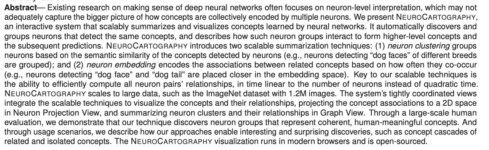
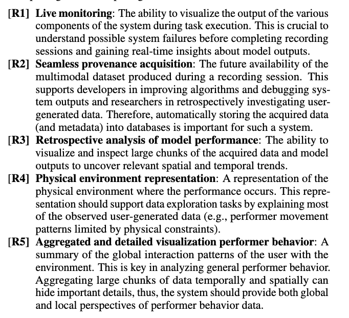
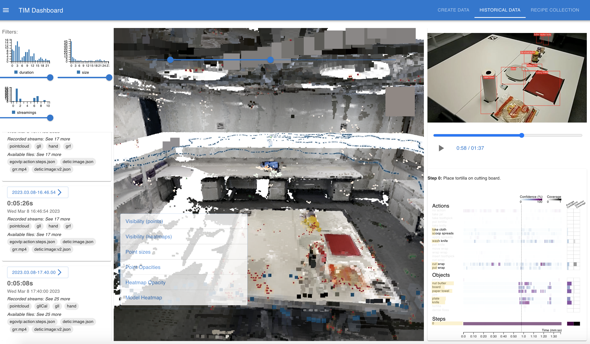
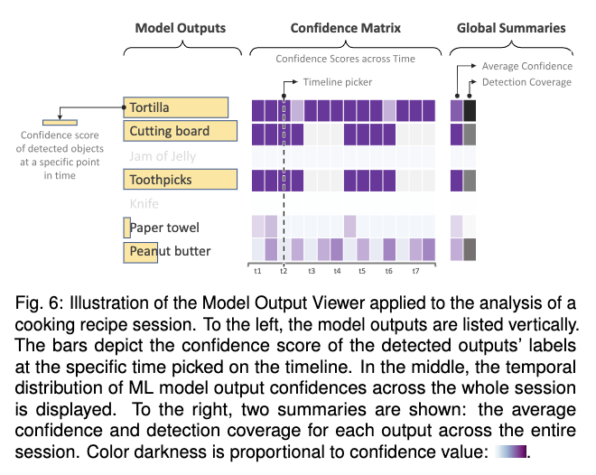
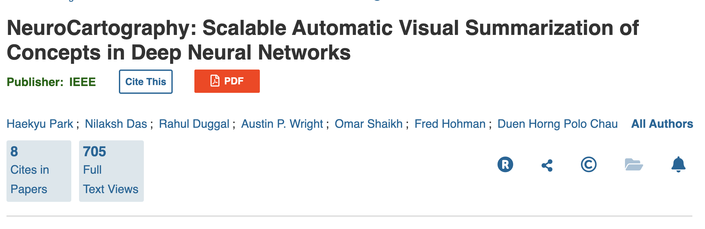
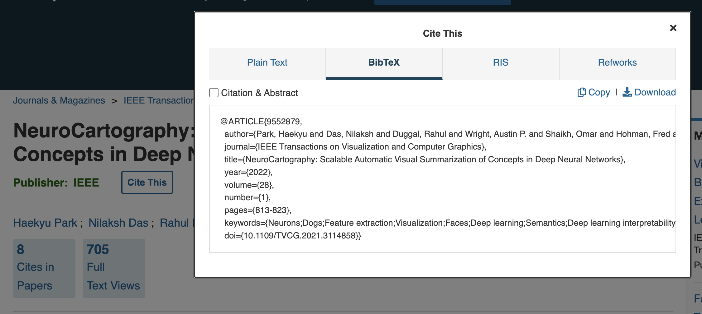
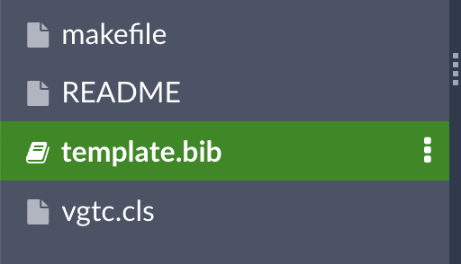
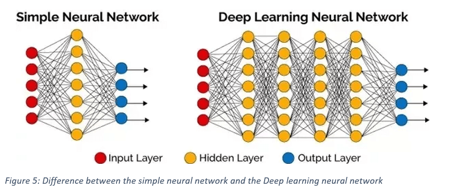

VisML Lab: Writing a Research Paper
DS-GA 3001 - Fall 2026 - Research Paper Writing
NYU Center for Data Science
2026-10-27
Lab Overview
- Today: how to write the research paper for your final project
- Your project update (1 page) is due Nov 3; the final paper (8 pages) is due Dec 14
- We will go section by section, then figures, then citations
Plan for This Session
| Part | Slides | Status |
|---|---|---|
| Why and how: the paper as an argument | 3 | core |
| The sections, abstract to conclusion | 15 | core |
| Figures | 3 | core |
| Citations with BibTeX | 4 | optional (read on your own) |
| Deep learning visualization tools | 5 | optional |
About 25 minutes for the core parts. Skip the optional parts if short on time; the slides stay available afterwards.
Why and How
Why Do We Care?
- Communicating your ideas clearly to a specific audience is a necessary skill in any profession, not just academia
- ML moves fast: papers are where the new insights are, and knowing their structure makes that information easier to find and use
- For your final project, you will present your work in the form of a research paper
A Paper Is a Persuasive Essay
The argument
- Science looks like objective truth, but it is a process of logical reasoning
- A good paper presents evidence that convinces the reader of a conclusion: the “story” of the paper
- You are not just describing what you did. You are arguing why it matters and why it is sound
The audience
- Assume general CS expertise and knowledge of the subfield (e.g. data visualization)
- Do not assume expertise in your specific topic or application
- In this class: write for visualization and ML experts
Typical Sections of a Research Paper
- Abstract
- Introduction
- Related Works
- Background / Design Goals / Data Description
- Methods
- Evaluation
- Conclusion / Limitations / Future Work
- Acknowledgements
- References
Intro, related works and background can seem redundant.
Each serves a different purpose, even where the information overlaps.
Paper Sections
Each Section Answers a Different Question
| Section | The question it answers |
|---|---|
| Abstract | What did you do, why, and what did you find? |
| Introduction | What problem, why does it matter, and how do you attack it? |
| Related Works | What have others tried, and what did we learn from it? |
| Background | What does the reader need to understand your work? |
| Methods | What did you build, and why this way? |
| Evaluation | How do you know it worked? |
| Conclusion | What does it mean, what are the limits, what is next? |
The Abstract
The first impression of your paper: an overview of every section in around 250 words.
| Part | What it answers |
|---|---|
| Motivation | Why do we care? Importance, difficulty, and impact if successful |
| Problem statement | What problem, and what scope (general or specific)? Avoid jargon |
| Approach | How did you go about it? What did you control, ignore, or measure? |
| Results | What is the answer? Give numbers; avoid “very”, “small”, “significant” |
| Conclusions | What are the implications? General, or specific to one case? |
Adapted from this guide, which gives more detail.
Example Abstract
Can you find the motivation, problem, approach, results and conclusions?

Intro vs Related Works vs Background
| Section | Its job |
|---|---|
| Introduction | What problem are you solving, why does it matter, and how are you solving it? |
| Related Works | How have others tried to solve it? What have we learned from those works? |
| Background | The context needed to understand the work you did: your data and design goals. Not a description of related work |
Proposals often conflate these three. Keeping them apart is the biggest structural upgrade you can make.
The Introduction Section
What it contains
- The motivation behind your project
- A brief account of why past work is insufficient
- An overview of your methods and your contributions
Do
- Really sell the issue: convince the reader the problem is important
Don’t
- Delve into details of related works. Citations backing up general statements are fine
What Are Contributions?
- The tangible products of the work: a tool, insights in the form of case studies, expert feedback
- Often written as a bulleted list at the end of the Introduction
The Related Works Section
- Situates your work in the context of the existing literature
- Synthesizes several papers into each salient point the reader needs before they can understand your work
- Not a list of recaps of other papers!
Related Works: Bad vs Good Structure
Bad: one paper per paragraph
We use the dataset by Author et al. [1], which [rest of paragraph recaps the dataset paper].
Smith et al. [2] present a visualization tool for multi-object tracking… [rest of paragraph describes this one paper].
Zhu et al. [3] also present a visualization tool for multi-object tracking… [rest of paragraph describes this one paper].
Good: one idea per paragraph
Previous works have tackled multi-object tracking (MoT) in several ways. Some have attempted Approach A [1, 2]. Others have built on this with Approach B [3, 4, 5]. These works gave promising results, but some shortcomings left questions unanswered.
Several challenging aspects of MoT have both inhibited and inspired previous studies. Scenes with many objects involve motion, and objects may become occluded. Previous works addressed this by doing X and Y [6, 7]. However, this is still insufficient because…
Structure paragraphs around approaches or challenges, not single papers.
The Background Section
- The context needed to understand the work you did, not related works
- Usually a description of your data and your design goals; other papers may describe earlier work by the same authors
Describing Your Data: Related Works or Background?
Goes in Related Works
The premise of the dataset paper and the lessons learned from it.
“High-resolution multimodal data collected in urban settings is difficult to collect and therefore not abundant. One example is the StreetAware dataset [1], which…”
Goes in Background
A literal description of the data.
“The dataset contains 120 videos in mp4 format, etc.”
What Are Design Goals?
A list of:
- What you hope to enable your users to do
- The types of insights you hope to provide
This is not a description of your contributions or the specific features of your visualizations.

The Methods Section
Explain your work, and argue for it
- Still part of the persuasive argument
- Justify why you did what you did as you explain it
- The justification can cite other works
Connect to your design goals
- Each aspect of your final product (visualizations, tool, system) should address at least one design goal
The Evaluation Section
- How do you know the approach in Methods worked?
- Quantitative metrics or qualitative analysis
- Case studies can go here or in their own section before it
- Other papers add expert feedback here (not required for this class)
What Is a Case Study?
- Walks the reader through an example of using your approach to gain valuable insights
- Typically used to show the value of a tool or system, and/or to justify design decisions
Example: see Section 6.2 of this paper
The Conclusion Section
- Recap the contributions and why they are important
- Limitations
- Future work
Figures
Figures
Why they matter
- Often the first impression of your paper
- Should stand alone as a complete thought
- The body text can repeat a figure’s content, but you should not need it to understand the figure
Common types
- Teaser
- System architecture
- Explaining a specific component
- Walking the reader through a case study
Figure Design
- No plain screenshots. Annotations should guide the reader through what they are looking at
- Be mindful of text size
- It should be clear that some thought went into the design
Bad vs Good Figure Design


Left: a plain screenshot (“The interface of our tool.”). Right: an annotated figure that explains itself.
Citations with BibTeX
BibTeX: Find the Entry
Most papers have a “cite this” button with BibTeX as a format option.

BibTeX: Find the Entry (continued)

BibTeX: Add It to Your .bib File
Paste the entry into template.bib, in the template provided for the paper.

BibTeX: Cite and Generate the Bibliography
Deep Learning Visualization Tools (Optional)
Visualizing Deep Learning
- Earlier tonight you used TensorFlow Playground and CNN Explainer: two visual tools for exploring the inner workings of neural networks
- There are many more tools like these, for many types of models
Deep Neural Networks (DNNs)
Deep neural networks stack more than one hidden layer.

NeuroCartography
Other Tools to Explore
- Visual Auditor: identifying and understanding biases in ML models
- Bluff: understanding adversarial attacks on neural networks
- Diffusion Explainer: how stable diffusion turns text prompts into images
Further Reading
- The CNN Explainer paper
- Zeiler and Fergus, Visualizing and Understanding Convolutional Networks
- ShapeShop: Towards Understanding Deep Learning Representations via Interactive Experimentation
Remember
- Your paper is a persuasive argument that your solution to the challenge you present is a reasonable one
- Think of each section and figure as a new facet of the evidence for that argument
Next: project update (1 page) due Nov 3; final paper (8 pages) due Dec 14.